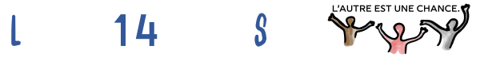

L14s.com
Bienvenue à L14s, l'environnement informatique de
www.lesgrandsvoisins.com
.
Sites principaux
Wagtail
pour
le portail
de lesgrandsvoisins.com
www.lesgrandsvoisins.com
Ghost
pour
le blog
des Grands Voisins
blog.lesgrandsvoisins.com
blog.l14s.com renvoi vers blog.lesgrandsvoisins.com
L14s
.com pour les outils libres
www.l14s.com
Communication
Webmail et serveur mail
des Grands Voisins
mail.lesgrandsvoisins.com
mail.l14s.com redirige vers mail.lesgrandsvoisins.com
documentation pour cela se trouve sur ... (à renseigner)
Salle de réunion Jitsi
en visioconférence
jitsi.lgv.info/lesgrandsvoisins
Comptes Keycloak
des utilisateurs
key.lesgrandsvoisins.com/realms/master/account
Information
Linkding
pour gérer nos liens web (favoris / marque pages)
linkding.lesgrandsvoisins.com
renommer en ld.l14s.com
Hedgedoc
pour éditer nos documents collaboratifs en format Markdown
mark.lesgrandsvoisins.com
renommer en hd.l14s.com
Vikunja
pour coordonner des projets et des tâches
task.lesgrandsvoisins.com
renommer en vk.l14s.com
Vaultwarden
pour gérer nos mots de passe
vw.lgv.info
renommer en vw.l14s.com
Dons
les_grands_voisins
sur Instagram
www.instagram.com/les_grands_voisins
peut-être à migrer vers l14s
@LesGrandsVoisinsCom
sur Youtube
www.youtube.com/@LesGrandsVoisinsCom
peut-être à migrer vers @l14s
Dons HelloAsso
pour Les Grands Voisins
www.helloasso.com/associations/les-grands-voisins/adhesions/souscription-annuelle
Dons Paypal
pour Les Grands Voisins
www.paypal.com/donate/?hosted_button_id=BPUUS6H6TP62Y
Dons Stripe
pour Les Grands Voisins
donate.stripe.com/fZe7uD07z9hAg0w288
Administration
Administration
du portail Wagtail
www.lesgrandsvoisins.com/cms-admin/
Administration
du serveur Keycloak
key.lesgrandsvoisins.com/admin
Administration
du blog Ghost
blog.lesgrandsvoisins.com/ghost
jout / nuit